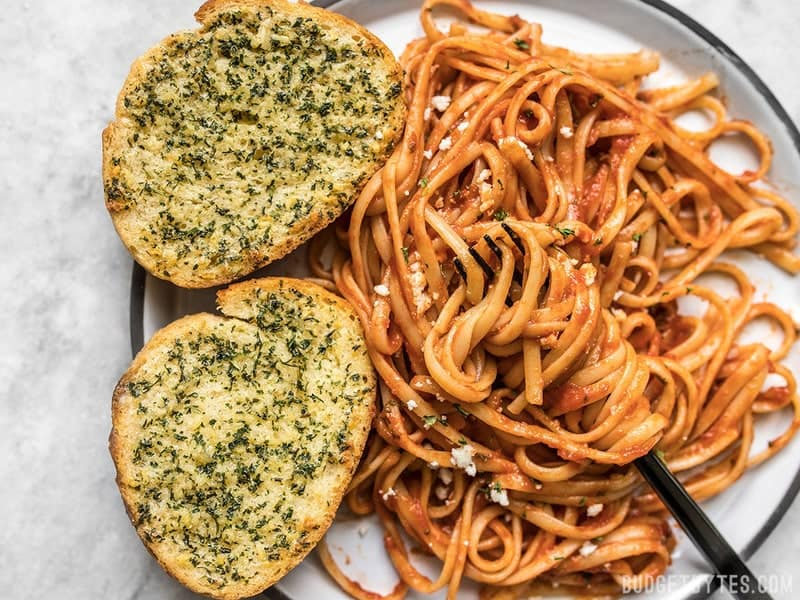

Spaghetti

Description
This recipe will teach you how to make spaghetti with a side of
garlic bread. It does not take long to prepare and is a healthy,
delicious dish. Additionally, there are only 3 required
ingredients.
Ingredients
- 2 16oz. jars of Pasta Sauce
- 1 box of Angel Hair Pasta
- Frozen Garlic Bread
- Grated Parmesan Cheese (optional)
- Preheat oven to the temperature indicated on your garlic
bread package.
- Once oven is preheated, add garlic bread to a baking dish
and bake in the oven for time indicated on the package.
- While the garlic bread is baking, bring 4 quarts of water
to a boil on the stovetop.
- Add the box of pasta to the water and boil for 7-9 minutes,
periodically testing it for desired texture.
- After pasta is finished, remove the water by straining it in
the sink. Add the 2 jars of pasta sauce to the spaghetti.
- Remove the garlic bread from the oven and serve with spaghetti.
Garnish with grated parmesan cheese if desired.